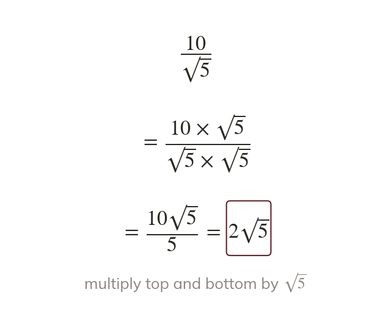
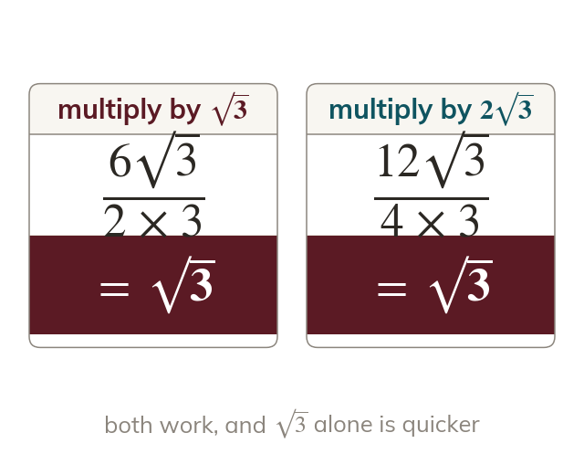
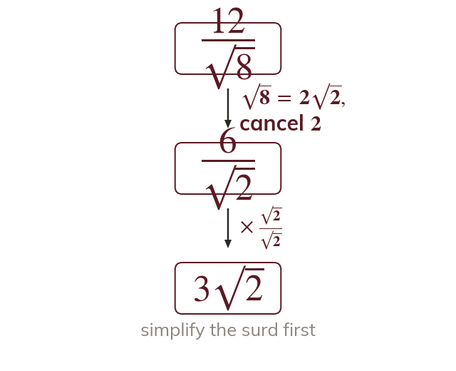
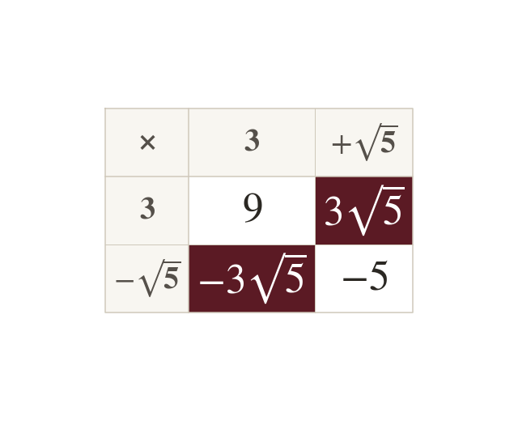
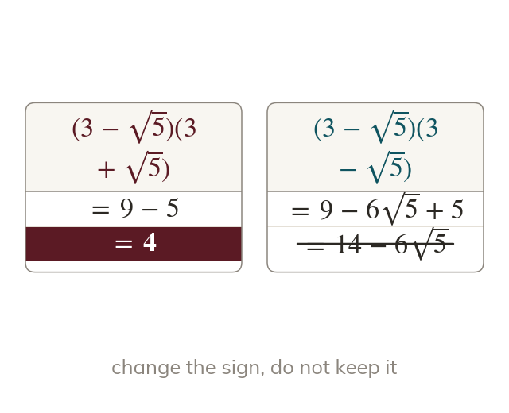
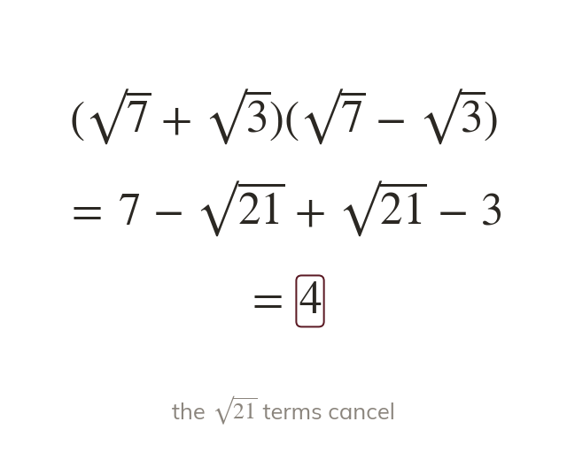

Why it works
so multiplying top and bottom by clears the surd from the bottom. Multiplying top and bottom by the same number does not change the value.
A rationalised answer is the exact form an exam expects, and it makes surd answers easy to compare. It closes the chapter, and chapter uses surds for the exact roots of quadratic equations.
Work down the page at your own pace. Write every answer in your book first, then click to check it.
Read each card, then follow the worked examples one step at a time.

so multiplying top and bottom by clears the surd from the bottom. Multiplying top and bottom by the same number does not change the value.

For in the denominator, multiply by only, because is already a whole number. So

A surd in the denominator with a square factor can be simplified first. Then cancel any common factor at the end.
Pick an answer. If it's wrong, the feedback tells you which mistake it was.
Write the blanks in your book first, then tap each one to check.
Read each card, then follow the worked examples one step at a time.

For in the denominator, multiply top and bottom by The middle terms cancel, so has no surd.

The bracket you multiply by has the opposite sign in the middle. Multiplying by the same bracket leaves a surd.

The same works for using The cross terms cancel and the squares leave whole numbers.
Pick an answer. If it's wrong, the feedback tells you which mistake it was.
Write the blanks in your book first, then tap each one to check.
Finished? Next lesson: 1.2 Expanding Brackets.
For each skill, tap the one that is true for you today. Your Revise pages start with anything you mark Not yet.
Your ratings are saved on this device only.
Log in, then search for a code to practise that skill.